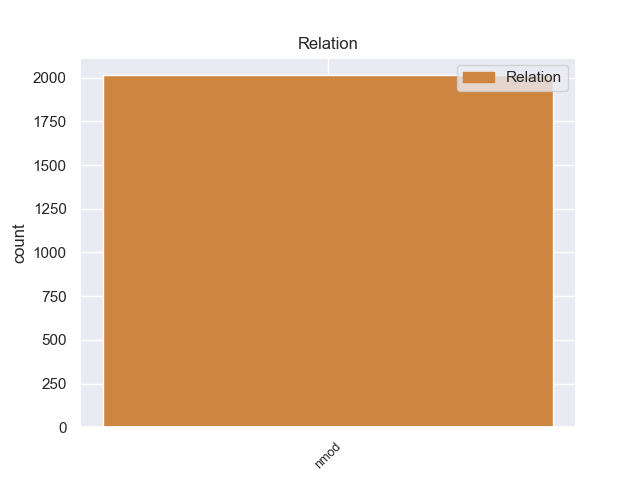
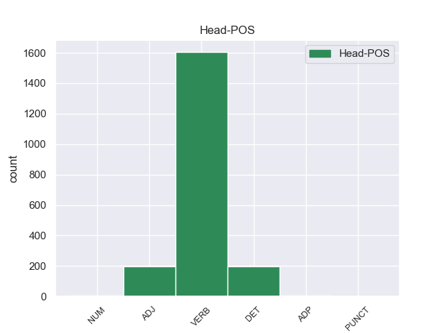
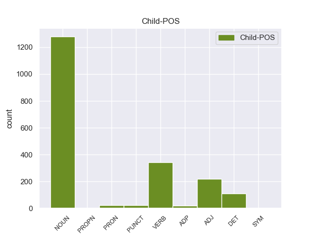

Distribution of features within this leaf



Agreement Rules sorted by frequency.
- When the dependent token is the nominal modifier(nmod) of the head token, and the head token is VERB
1 Το _ _ _ _ 0 _ _ _
2 άρθρο _ _ _ _ 0 _ _ _
3 9 _ _ _ _ 0 _ _ _
4 του _ _ _ _ 0 _ _ _
5 Πρωτοκόλλου _ _ _ _ 0 _ _ _
6 , _ _ _ _ 0 _ _ _
7 όπως _ _ _ _ 0 _ _ _
8 επεσήμανε επεσήμαν VERB _ Case=Acc|Gender=Fem|Number=Sing 0 _ _ _
9 με _ _ _ _ 0 _ _ _
10 αυστηρότητα _ _ _ _ 0 _ _ _
11 η _ _ _ _ 0 _ _ _
12 Πρόεδρος _ _ _ _ 0 _ _ _
13 Fontaine _ _ _ _ 0 _ _ _
14 σ _ _ _ _ 0 _ _ _
15 τον _ _ _ _ 0 _ _ _
16 Εισαγγελέα _ _ _ _ 0 _ _ _
17 , _ _ _ _ 0 _ _ _
18 μας _ _ _ _ 0 _ _ _
19 απαλλάσσει _ _ _ _ 0 _ _ _
20 τελείως _ _ _ _ 0 _ _ _
21 από _ _ _ _ 0 _ _ _
22 οποιαδήποτε _ _ _ _ 0 _ _ _
23 νομική _ _ _ _ 0 _ _ _
24 διαδικασία _ _ _ _ 0 _ _ _
25 σε _ _ _ _ 0 _ _ _
26 σχέση _ _ _ _ 0 _ _ _
27 με _ _ _ _ 0 _ _ _
28 την _ _ _ _ 0 _ _ _
29 έκφραση _ _ _ _ 0 _ _ _
30 γνώμης _ _ _ _ 0 _ _ _
31 ή _ _ _ _ 0 _ _ _
32 ψήφου _ _ _ _ 0 _ _ _
33 κατά _ _ _ _ 0 _ _ _
34 την _ _ _ _ 0 _ _ _
35 άσκηση _ _ _ _ 0 _ _ _
36 των _ _ _ _ 0 _ _ _
37 καθηκόντων _ _ _ _ 0 _ _ _
38 μας _ _ _ _ 0 _ _ _
39 ως _ _ _ _ 0 _ _ _
40 μέλη _ _ _ _ 0 _ _ _
41 αυτού _ _ _ _ 0 _ _ _
42 του _ _ _ _ 0 _ _ _
43 Κοινοβουλίου κοινοβουλίο ADJ _ Case=Acc|Gender=Fem|Number=Sing 8 nmod _ _
44 . _ _ _ _ 0 _ _ _
1 Το _ _ _ _ 0 _ _ _
2 άρθρο _ _ _ _ 0 _ _ _
3 9 _ _ _ _ 0 _ _ _
4 του _ _ _ _ 0 _ _ _
5 Πρωτοκόλλου _ _ _ _ 0 _ _ _
6 , _ _ _ _ 0 _ _ _
7 όπως _ _ _ _ 0 _ _ _
8 επεσήμανε _ _ _ _ 0 _ _ _
9 με _ _ _ _ 0 _ _ _
10 αυστηρότητα _ _ _ _ 0 _ _ _
11 η _ _ _ _ 0 _ _ _
12 Πρόεδρος _ _ _ _ 0 _ _ _
13 Fontaine _ _ _ _ 0 _ _ _
14 σ _ _ _ _ 0 _ _ _
15 τον _ _ _ _ 0 _ _ _
16 Εισαγγελέα _ _ _ _ 0 _ _ _
17 , _ _ _ _ 0 _ _ _
18 μας _ _ _ _ 0 _ _ _
19 απαλλάσσει _ _ _ _ 0 _ _ _
20 τελείως _ _ _ _ 0 _ _ _
21 από _ _ _ _ 0 _ _ _
22 οποιαδήποτε _ _ _ _ 0 _ _ _
23 νομική _ _ _ _ 0 _ _ _
24 διαδικασία διαδικασία DET _ Case=Acc|Gender=Fem|Number=Sing 0 _ _ _
25 σε _ _ _ _ 0 _ _ _
26 σχέση _ _ _ _ 0 _ _ _
27 με _ _ _ _ 0 _ _ _
28 την _ _ _ _ 0 _ _ _
29 έκφραση _ _ _ _ 0 _ _ _
30 γνώμης _ _ _ _ 0 _ _ _
31 ή _ _ _ _ 0 _ _ _
32 ψήφου ψήφο NOUN _ Case=Gen|Gender=Fem|Number=Sing 24 nmod _ _
33 κατά _ _ _ _ 0 _ _ _
34 την _ _ _ _ 0 _ _ _
35 άσκηση _ _ _ _ 0 _ _ _
36 των _ _ _ _ 0 _ _ _
37 καθηκόντων _ _ _ _ 0 _ _ _
38 μας _ _ _ _ 0 _ _ _
39 ως _ _ _ _ 0 _ _ _
40 μέλη _ _ _ _ 0 _ _ _
41 αυτού _ _ _ _ 0 _ _ _
42 του _ _ _ _ 0 _ _ _
43 Κοινοβουλίου _ _ _ _ 0 _ _ _
44 . _ _ _ _ 0 _ _ _
1 Σύμφωνα _ _ _ _ 0 _ _ _
2 με _ _ _ _ 0 _ _ _
3 το _ _ _ _ 0 _ _ _
4 άρθρο _ _ _ _ 0 _ _ _
5 10 _ _ _ _ 0 _ _ _
6 του _ _ _ _ 0 _ _ _
7 Πρωτοκόλλου _ _ _ _ 0 _ _ _
8 του _ _ _ _ 0 _ _ _
9 1965 _ _ _ _ 0 _ _ _
10 , _ _ _ _ 0 _ _ _
11 δεν _ _ _ _ 0 _ _ _
12 υφίσταται _ _ _ _ 0 _ _ _
13 σχετική _ _ _ _ 0 _ _ _
14 ασυλία _ _ _ _ 0 _ _ _
15 για _ _ _ _ 0 _ _ _
16 βουλευτή _ _ _ _ 0 _ _ _
17 της _ _ _ _ 0 _ _ _
18 Γαλλικής _ _ _ _ 0 _ _ _
19 Εθνοσυνέλευσης _ _ _ _ 0 _ _ _
20 ή _ _ _ _ 0 _ _ _
21 , _ _ _ _ 0 _ _ _
22 κατά _ _ _ _ 0 _ _ _
23 συνέπεια _ _ _ _ 0 _ _ _
24 , _ _ _ _ 0 _ _ _
25 για _ _ _ _ 0 _ _ _
26 γάλλο _ _ _ _ 0 _ _ _
27 βουλευτή βουλευτής NOUN _ Case=Gen|Gender=Fem|Number=Sing 33 nmod _ _
28 του _ _ _ _ 0 _ _ _
29 Ευρωπαϊκού _ _ _ _ 0 _ _ _
30 Κοινοβουλίου _ _ _ _ 0 _ _ _
31 σε _ _ _ _ 0 _ _ _
32 περίπτωση _ _ _ _ 0 _ _ _
33 δίωξης δίωξης ADJ _ Case=Acc|Gender=Fem|Number=Sing 0 _ _ _
34 για _ _ _ _ 0 _ _ _
35 κατηγορίες _ _ _ _ 0 _ _ _
36 αυτού _ _ _ _ 0 _ _ _
37 του _ _ _ _ 0 _ _ _
38 είδους _ _ _ _ 0 _ _ _
39 . _ _ _ _ 0 _ _ _
1 Ο _ _ _ _ 0 _ _ _
2 δημοσιογράφος _ _ _ _ 0 _ _ _
3 , _ _ _ _ 0 _ _ _
4 ο _ _ _ _ 0 _ _ _
5 οποίος _ _ _ _ 0 _ _ _
6 έγραφε _ _ _ _ 0 _ _ _
7 τις _ _ _ _ 0 _ _ _
8 ομιλίες _ _ _ _ 0 _ _ _
9 του _ _ _ _ 0 _ _ _
10 Χάουμε _ _ _ _ 0 _ _ _
11 Μάτας _ _ _ _ 0 _ _ _
12 και _ _ _ _ 0 _ _ _
13 έπλεκε _ _ _ _ 0 _ _ _
14 το _ _ _ _ 0 _ _ _
15 εγκώμιο _ _ _ _ 0 _ _ _
16 του _ _ _ _ 0 _ _ _
17 τελευταίου _ _ _ _ 0 _ _ _
18 , _ _ _ _ 0 _ _ _
19 καταδικάστηκε _ _ _ _ 0 _ _ _
20 σε _ _ _ _ 0 _ _ _
21 κάθειρξη κάθειρξός ADP _ Case=Acc|Gender=Fem|Number=Sing 0 _ _ _
22 τριών τριών NOUN _ Case=Acc|Gender=Fem|Number=Sing 21 nmod _ _
23 ετών _ _ _ _ 0 _ _ _
24 και _ _ _ _ 0 _ _ _
25 εννέα _ _ _ _ 0 _ _ _
26 μηνών _ _ _ _ 0 _ _ _
27 . _ _ _ _ 0 _ _ _
1 Η _ _ _ _ 0 _ _ _
2 διαμάχη _ _ _ _ 0 _ _ _
3 μεταξύ _ _ _ _ 0 _ _ _
4 Ρωσίας _ _ _ _ 0 _ _ _
5 και _ _ _ _ 0 _ _ _
6 Ουκρανίας _ _ _ _ 0 _ _ _
7 για _ _ _ _ 0 _ _ _
8 το _ _ _ _ 0 _ _ _
9 μέλλον _ _ _ _ 0 _ _ _
10 της _ _ _ _ 0 _ _ _
11 Κριμαίας _ _ _ _ 0 _ _ _
12 κορυφώνεται _ _ _ _ 0 _ _ _
13 και _ _ _ _ 0 _ _ _
14 οι _ _ _ _ 0 _ _ _
15 Τάταροι _ _ _ _ 0 _ _ _
16 , _ _ _ _ 0 _ _ _
17 άλλη _ _ _ _ 0 _ _ _
18 μια ένας NUM NUM Case=Nom|Gender=Fem|Number=Sing|NumType=Card 0 _ _ _
19 απ’ _ _ _ _ 0 _ _ _
20 τις _ _ _ _ 0 _ _ _
21 μειονότητες μειονότητα NOUN NOUN Case=Acc|Gender=Fem|Number=Plur 18 nmod _ _
22 που _ _ _ _ 0 _ _ _
23 ζουν _ _ _ _ 0 _ _ _
24 σ _ _ _ _ 0 _ _ _
25 την _ _ _ _ 0 _ _ _
26 επίμαχη _ _ _ _ 0 _ _ _
27 περιοχή _ _ _ _ 0 _ _ _
28 , _ _ _ _ 0 _ _ _
29 βρίσκονται _ _ _ _ 0 _ _ _
30 σε _ _ _ _ 0 _ _ _
31 μειονεκτική _ _ _ _ 0 _ _ _
32 θέση _ _ _ _ 0 _ _ _
33 . _ _ _ _ 0 _ _ _
1 Η _ _ _ _ 0 _ _ _
2 έρευνα _ _ _ _ 0 _ _ _
3 της _ _ _ _ 0 _ _ _
4 ξεκίνησε _ _ _ _ 0 _ _ _
5 δύο _ _ _ _ 0 _ _ _
6 εβδομάδες _ _ _ _ 0 _ _ _
7 μετά _ _ _ _ 0 _ _ _
8 την _ _ _ _ 0 _ _ _
9 παραίτηση _ _ _ _ 0 _ _ _
10 του _ _ _ _ 0 _ _ _
11 Κρίστιαν _ _ _ _ 0 _ _ _
12 Βουλφ _ _ _ _ 0 _ _ _
13 απ' _ _ _ _ 0 _ _ _
14 τη _ _ _ _ 0 _ _ _
15 θέση θέσης PUNCT _ Case=Acc|Gender=Fem|Number=Sing 0 _ _ _
16 του _ _ _ _ 0 _ _ _
17 Προέδρου _ _ _ _ 0 _ _ _
18 της _ _ _ _ 0 _ _ _
19 Γερμανίας γερμανίας PUNCT _ Case=Acc|Gender=Fem|Number=Sing 15 nmod _ _
20 , _ _ _ _ 0 _ _ _
21 λόγω _ _ _ _ 0 _ _ _
22 σκανδάλου _ _ _ _ 0 _ _ _
23 για _ _ _ _ 0 _ _ _
24 παθητική _ _ _ _ 0 _ _ _
25 δωροδοκία _ _ _ _ 0 _ _ _
26 . _ _ _ _ 0 _ _ _
Disagree Examples:
1 Επιτυχία _ _ _ _ 0 _ _ _
2 επίσης _ _ _ _ 0 _ _ _
3 , _ _ _ _ 0 _ _ _
4 και _ _ _ _ 0 _ _ _
5 αυτή _ _ _ _ 0 _ _ _
6 τη _ _ _ _ 0 _ _ _
7 φορά _ _ _ _ 0 _ _ _
8 μπορούμε _ _ _ _ 0 _ _ _
9 να _ _ _ _ 0 _ _ _
10 το _ _ _ _ 0 _ _ _
11 πούμε _ _ _ _ 0 _ _ _
12 , _ _ _ _ 0 _ _ _
13 της _ _ _ _ 0 _ _ _
14 Επιτροπής _ _ _ _ 0 _ _ _
15 , _ _ _ _ 0 _ _ _
16 η _ _ _ _ 0 _ _ _
17 οποία _ _ _ _ 0 _ _ _
18 ήταν _ _ _ _ 0 _ _ _
19 υπεύθυνη _ _ _ _ 0 _ _ _
20 για _ _ _ _ 0 _ _ _
21 το _ _ _ _ 0 _ _ _
22 εγχείρημα _ _ _ _ 0 _ _ _
23 , _ _ _ _ 0 _ _ _
24 του _ _ _ _ 0 _ _ _
25 Προέδρου _ _ _ _ 0 _ _ _
26 Πρόντι _ _ _ _ 0 _ _ _
27 , _ _ _ _ 0 _ _ _
28 ο _ _ _ _ 0 _ _ _
29 οποίος _ _ _ _ 0 _ _ _
30 , _ _ _ _ 0 _ _ _
31 όταν _ _ _ _ 0 _ _ _
32 ήταν _ _ _ _ 0 _ _ _
33 Πρόεδρος _ _ _ _ 0 _ _ _
34 του _ _ _ _ 0 _ _ _
35 Ecofin _ _ _ _ 0 _ _ _
36 , _ _ _ _ 0 _ _ _
37 κατέστησε _ _ _ _ 0 _ _ _
38 δυνατή _ _ _ _ 0 _ _ _
39 την _ _ _ _ 0 _ _ _
40 είσοδο _ _ _ _ 0 _ _ _
41 της _ _ _ _ 0 _ _ _
42 Ιταλίας _ _ _ _ 0 _ _ _
43 σ _ _ _ _ 0 _ _ _
44 το _ _ _ _ 0 _ _ _
45 ευρώ _ _ _ _ 0 _ _ _
46 με _ _ _ _ 0 _ _ _
47 τον _ _ _ _ 0 _ _ _
48 σημερινό _ _ _ _ 0 _ _ _
49 Πρόεδρο _ _ _ _ 0 _ _ _
50 της _ _ _ _ 0 _ _ _
51 Δημοκρατίας _ _ _ _ 0 _ _ _
52 , _ _ _ _ 0 _ _ _
53 μίας _ _ _ _ 0 _ _ _
54 χώρας _ _ _ _ 0 _ _ _
55 της _ _ _ _ 0 _ _ _
56 οποίας _ _ _ _ 0 _ _ _
57 η _ _ _ _ 0 _ _ _
58 τρέχουσα _ _ _ _ 0 _ _ _
59 κυβέρνηση _ _ _ _ 0 _ _ _
60 επέλεξε _ _ _ _ 0 _ _ _
61 την _ _ _ _ 0 _ _ _
62 πρώτη πρώτος NUM NUM Case=Acc|Gender=Fem|Number=Sing|NumType=Ord 0 _ _ _
63 Ιανουαρίου Ιανουάριος PROPN PROPN Case=Gen|Gender=Masc|Number=Sing 62 nmod _ SpaceAfter=No
64 , _ _ _ _ 0 _ _ _
65 εν _ _ _ _ 0 _ _ _
66 μέρει _ _ _ _ 0 _ _ _
67 , _ _ _ _ 0 _ _ _
68 να _ _ _ _ 0 _ _ _
69 δυσφημίσει _ _ _ _ 0 _ _ _
70 το _ _ _ _ 0 _ _ _
71 κοινό _ _ _ _ 0 _ _ _
72 νόμισμα _ _ _ _ 0 _ _ _
73 . _ _ _ _ 0 _ _ _
1 Αντίσταση _ _ _ _ 0 _ _ _
2 άξια άξιος ADJ ADJ Case=Acc|Gender=Fem|Number=Sing 0 _ _ _
3 λόγου λόγος NOUN NOUN Case=Gen|Gender=Masc|Number=Sing 2 nmod _ _
4 πρόβαλε _ _ _ _ 0 _ _ _
5 η _ _ _ _ 0 _ _ _
6 ΕΛΔΥΚ _ _ _ _ 0 _ _ _
7 και _ _ _ _ 0 _ _ _
8 ορισμένα _ _ _ _ 0 _ _ _
9 σώματα _ _ _ _ 0 _ _ _
10 Κυπρίων _ _ _ _ 0 _ _ _
11 Εθνοφρουρών _ _ _ _ 0 _ _ _
12 , _ _ _ _ 0 _ _ _
13 πολλοί _ _ _ _ 0 _ _ _
14 από _ _ _ _ 0 _ _ _
15 τους _ _ _ _ 0 _ _ _
16 οποίους _ _ _ _ 0 _ _ _
17 σκοτώθηκαν _ _ _ _ 0 _ _ _
18 , _ _ _ _ 0 _ _ _
19 αιχμαλωτίστηκαν _ _ _ _ 0 _ _ _
20 ή _ _ _ _ 0 _ _ _
21 χάθηκαν _ _ _ _ 0 _ _ _
22 τα _ _ _ _ 0 _ _ _
23 ίχνη _ _ _ _ 0 _ _ _
24 τους _ _ _ _ 0 _ _ _
25 . _ _ _ _ 0 _ _ _
1 Σ _ _ _ _ 0 _ _ _
2 το _ _ _ _ 0 _ _ _
3 Ιράκ _ _ _ _ 0 _ _ _
4 , _ _ _ _ 0 _ _ _
5 κατά _ _ _ _ 0 _ _ _
6 τη _ _ _ _ 0 _ _ _
7 διάρκεια _ _ _ _ 0 _ _ _
8 συγκρούσεων _ _ _ _ 0 _ _ _
9 μεταξύ _ _ _ _ 0 _ _ _
10 διαδηλωτών _ _ _ _ 0 _ _ _
11 ( _ _ _ _ 0 _ _ _
12 μέλη _ _ _ _ 0 _ _ _
13 της _ _ _ _ 0 _ _ _
14 σουνιτικής _ _ _ _ 0 _ _ _
15 μειονότητας _ _ _ _ 0 _ _ _
16 του _ _ _ _ 0 _ _ _
17 Ιράκ ιράός NOUN _ Case=Acc|Gender=Fem|Number=Sing 26 nmod _ _
18 ) _ _ _ _ 0 _ _ _
19 και _ _ _ _ 0 _ _ _
20 στρατιωτών _ _ _ _ 0 _ _ _
21 , _ _ _ _ 0 _ _ _
22 πέντε _ _ _ _ 0 _ _ _
23 άτομα _ _ _ _ 0 _ _ _
24 έχασαν _ _ _ _ 0 _ _ _
25 τη _ _ _ _ 0 _ _ _
26 ζωή ζωής ADP _ Case=Acc|Gender=Neut|Number=Sing 0 _ _ _
27 τους _ _ _ _ 0 _ _ _
28 , _ _ _ _ 0 _ _ _
29 ενώ _ _ _ _ 0 _ _ _
30 άλλα _ _ _ _ 0 _ _ _
31 20 _ _ _ _ 0 _ _ _
32 σκοτώθηκαν _ _ _ _ 0 _ _ _
33 . _ _ _ _ 0 _ _ _
1 Επίσης _ _ _ _ 0 _ _ _
2 , _ _ _ _ 0 _ _ _
3 ο _ _ _ _ 0 _ _ _
4 Μιτ ιτ NOUN _ Case=Acc|Gender=Fem|Number=Sing 22 nmod _ _
5 Ρόμνεϊ _ _ _ _ 0 _ _ _
6 πέτυχε _ _ _ _ 0 _ _ _
7 νίκη _ _ _ _ 0 _ _ _
8 σ _ _ _ _ 0 _ _ _
9 το _ _ _ _ 0 _ _ _
10 Γκουάμ _ _ _ _ 0 _ _ _
11 και _ _ _ _ 0 _ _ _
12 σ _ _ _ _ 0 _ _ _
13 τις _ _ _ _ 0 _ _ _
14 Βόρειες _ _ _ _ 0 _ _ _
15 Μαριάνες _ _ _ _ 0 _ _ _
16 , _ _ _ _ 0 _ _ _
17 οι _ _ _ _ 0 _ _ _
18 οποίες _ _ _ _ 0 _ _ _
19 αν _ _ _ _ 0 _ _ _
20 και _ _ _ _ 0 _ _ _
21 δεν _ _ _ _ 0 _ _ _
22 ψηφίζουν ψηφίζουν ADJ _ Case=Acc|Gender=Neut|Number=Sing 0 _ _ _
23 σ _ _ _ _ 0 _ _ _
24 τις _ _ _ _ 0 _ _ _
25 προεδρικές _ _ _ _ 0 _ _ _
26 εκλογές _ _ _ _ 0 _ _ _
27 στέλνουν _ _ _ _ 0 _ _ _
28 εκλέκτορες _ _ _ _ 0 _ _ _
29 σ _ _ _ _ 0 _ _ _
30 τα _ _ _ _ 0 _ _ _
31 κομματικά _ _ _ _ 0 _ _ _
32 συνέδρια _ _ _ _ 0 _ _ _
33 . _ _ _ _ 0 _ _ _
1 Επίσης _ _ _ _ 0 _ _ _
2 , _ _ _ _ 0 _ _ _
3 ο _ _ _ _ 0 _ _ _
4 Μιτ _ _ _ _ 0 _ _ _
5 Ρόμνεϊ _ _ _ _ 0 _ _ _
6 πέτυχε _ _ _ _ 0 _ _ _
7 νίκη _ _ _ _ 0 _ _ _
8 σ _ _ _ _ 0 _ _ _
9 το _ _ _ _ 0 _ _ _
10 Γκουάμ γκουάμ NOUN _ Case=Acc|Gender=Fem|Number=Sing 22 nmod _ _
11 και _ _ _ _ 0 _ _ _
12 σ _ _ _ _ 0 _ _ _
13 τις _ _ _ _ 0 _ _ _
14 Βόρειες _ _ _ _ 0 _ _ _
15 Μαριάνες _ _ _ _ 0 _ _ _
16 , _ _ _ _ 0 _ _ _
17 οι _ _ _ _ 0 _ _ _
18 οποίες _ _ _ _ 0 _ _ _
19 αν _ _ _ _ 0 _ _ _
20 και _ _ _ _ 0 _ _ _
21 δεν _ _ _ _ 0 _ _ _
22 ψηφίζουν ψηφίζουν ADJ _ Case=Acc|Gender=Neut|Number=Sing 0 _ _ _
23 σ _ _ _ _ 0 _ _ _
24 τις _ _ _ _ 0 _ _ _
25 προεδρικές _ _ _ _ 0 _ _ _
26 εκλογές _ _ _ _ 0 _ _ _
27 στέλνουν _ _ _ _ 0 _ _ _
28 εκλέκτορες _ _ _ _ 0 _ _ _
29 σ _ _ _ _ 0 _ _ _
30 τα _ _ _ _ 0 _ _ _
31 κομματικά _ _ _ _ 0 _ _ _
32 συνέδρια _ _ _ _ 0 _ _ _
33 . _ _ _ _ 0 _ _ _